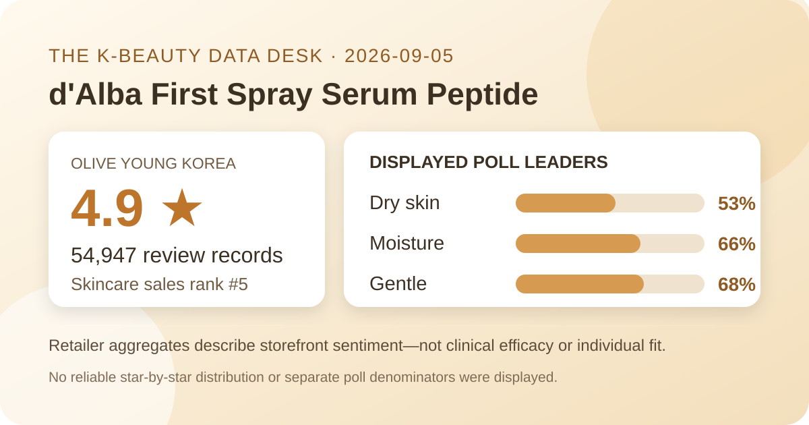
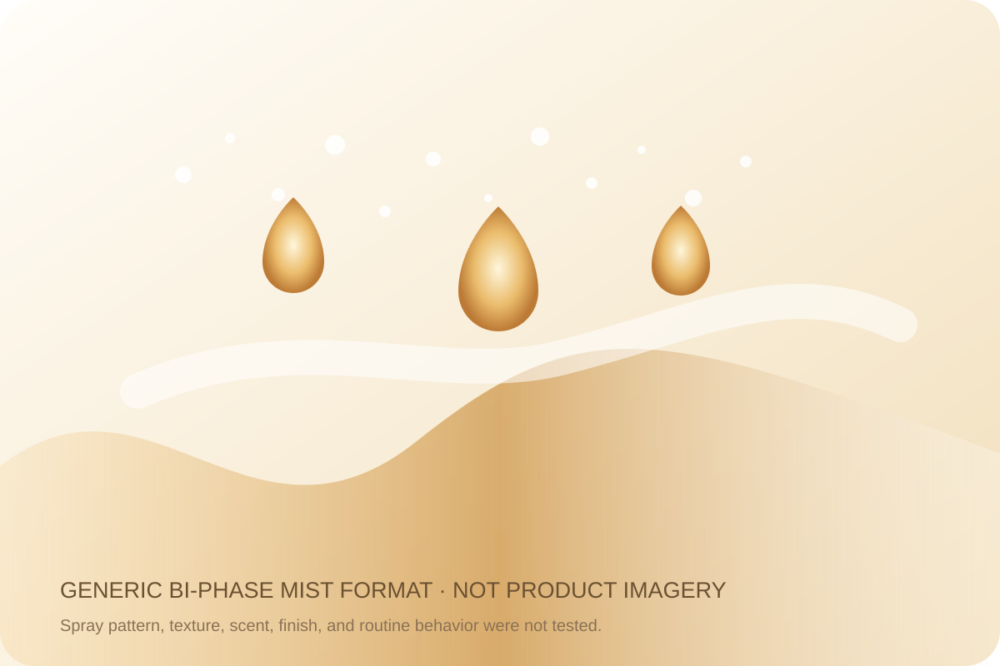

Data captured September 5, 2026. This article uses only the retailer's displayed product title, skincare sales rank, aggregate rating, review count, survey shares, and dated pack and price display. No individual review, reviewer name, product photograph, or user photograph is reproduced or translated. I did not test the product.

The short version: the promotional d'Alba First Spray Serum Peptide listing ranked fifth in the captured Olive Young Korea skincare sales list and displayed 4.9 out of 5 from 54,947 review records. Its survey panel showed dry skin 53%, moisture preference 66%, and a gentle response at 68%. These are storefront feedback signals, not proof that the mist increases hydration, improves a skin condition, or suits every user.
The defensible conclusion is narrow but useful: within this retailer's rating system, a very large pool of linked records produced a strongly favorable one-decimal average on capture day. A base of 54,947 means no single score can materially determine the visible average. It supports describing storefront sentiment as broadly positive. It does not show how the product performs against another mist, how long anyone used it, or whether every record reflects the exact double pack currently promoted.
The page did not expose a trustworthy five-, four-, three-, two-, and one-star breakdown in the captured view. Many different distributions can round to 4.9, and the displayed average hides additional precision. I therefore do not reverse-engineer a five-star share or fill missing buckets with assumptions. The count and average are also a dated snapshot; later records, listing consolidation, or retailer changes may alter both.
Large review volume reduces random-looking volatility but does not remove selection effects. The pool comes from shoppers linked to one retailer who chose to leave feedback. Scores may reflect packaging, delivery, price, gifting, incentives, expectations, option changes, or product experience. A commerce aggregate is valuable purchase context, yet it is neither a controlled trial nor a representative survey of everyone considering facial mist.
This was the leading displayed skin-type response. It describes representation, not a dry-skin performance score.
This identifies the leading displayed skin-concern response. It is not an instrumental measurement of hydration.
This is a subjective aggregate response, not an irritation test, safety assessment, or promise for reactive skin.
The three percentages answer separate questions, so they should not be added, averaged, or treated as parts of one distribution. The retailer did not display a distinct denominator for each survey. There is no basis for assuming all 54,947 linked records answered every prompt, and a leading response does not reveal the shares for every alternative.
Dry skin at 53% means that group led the captured skin-type poll; it does not prove the formula works better for dry skin. The 66% moisture response identifies what respondents selected, not a measured before-and-after change. The 68% gentle response is useful as sentiment context, but personal tolerance can vary with allergies, current skin condition, amount, frequency, and the products used alongside it.

The retailer places the item in its mist category and names it a spray serum, but I did not open, shake, spray, smell, spread, or layer it. Droplet size, spray width, pump consistency, settling, oiliness, tack, absorption time, residue, scent, eye-area comfort, pilling, and compatibility with sunscreen or makeup remain unknown here. The local illustration communicates only a generic bi-phase mist format and deliberately avoids copying product imagery, bottle design, logos, or shopper photos.
A format label cannot tell a person how an individual pump will feel or behave in a specific routine. Follow the directions and ingredient label on the actual market-specific package. If a product visibly separates, the package may provide shaking instructions; this article does not infer them. Introducing one product at a time can make an unwanted change easier to notice, but that practice cannot guarantee compatibility.
The English working name closely translates the Korean listing. “Peptide,” “serum,” and the listing's moisture-and-glow positioning are parts of the retail identity and marketing context; they are not standardized measures of concentration, delivery, penetration, or outcome. A high rating does not validate those ideas. The review panel did not measure corneometry, barrier function, wrinkle depth, elasticity, radiance, sensitivity, or any clinical endpoint.
No peptide amount, truffle-derived ingredient level, oil-to-water ratio, active threshold, or ingredient concentration is inferred from the name, appearance, or rank. Product titles, diagrams, discounts, popularity, and survey shares cannot substitute for the complete current ingredient label or a study report. A similarly named d'Alba item in another market may differ in bundle, packaging, seller, label, or formula, so buyers should verify the exact regional item.
Rank five means this promotional listing had strong current sales momentum inside Olive Young Korea's skincare chart at one moment on September 5. It does not mean fifth-best skincare product, fifth-best facial mist, or a stronger formula than everything below it. The page showed a one-day sale context, a double pack, a large discount, coupons, delivery badges, and active viewing traffic. Those commercial conditions can influence purchase velocity.
Rank and rating answer different questions. Rank reflects current retailer sales activity; rating summarizes feedback linked to the listing. Neither explains why someone purchased, why a score was chosen, how the product was used, or what happened afterward. Ranking is useful here for choosing a timely product to audit, not for converting popularity into efficacy evidence.
The captured listing described a 100 ml double set, with a ₩59,800 reference price and a ₩31,900 promotional display. It also showed a ₩1,595-per-10-ml basis for 200 ml. These were storefront values on September 5, 2026, not permanent prices or promises that the same option, coupon, gift, or inventory will remain available.
Before comparing value, confirm the selected option, total usable volume, final checkout total, seller, delivery terms, expiry information, and return rights. A double set improves unit economics only when both bottles can be used appropriately before expiry. Packaging and authorized distribution can differ across markets, so a marketplace listing with a similar name should not automatically be treated as identical.
I did not independently capture and reconcile the complete current ingredient list across regions. This article therefore does not claim the spray serum is fragrance-free, alcohol-free, essential-oil-free, hypoallergenic, non-comedogenic, pregnancy-compatible, or suitable for acne, eczema, rosacea, allergy, broken skin, or another medical concern. Read the exact package for the item received.
A 68% gentle response cannot rule out stinging, dryness, congestion, allergy, eye irritation, or another unwanted experience. Avoid inhaling mist and follow the package's eye-area directions. When a known allergy, prescription, skin condition, pregnancy, or previous serious reaction makes the choice higher stakes, qualified medical guidance is more appropriate than a retail average.
Not necessarily. The page did not expose a reliable star-by-star distribution, and multiple distributions can round to 4.9.
No. Dry skin led the displayed poll at 53%, which describes respondents in that poll rather than comparative performance or guaranteed fit.
No. That was the leading displayed concern response, not an instrumental measurement, before-and-after result, or controlled comparison.
No. The retailer displayed a 68% gentle response without a separate denominator. It remains subjective and cannot predict individual tolerance.
No. This is a retail-data analysis, and firsthand spray pattern, scent, texture, finish, and wear remain unverified.
The dated aggregate fields were captured from the live Korean product listing. Retail displays can change after capture.
Bottom line: 4.9 from 54,947 records, a number-five sales rank, and the three displayed poll leaders make this a timely, strongly favorable retail listing. The responsible conclusion stops there: the data does not establish peptide concentration, measured hydration, glow, gentleness for an individual, or superiority over another mist.